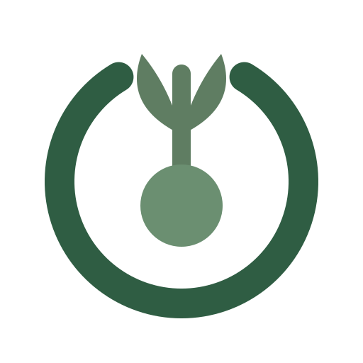
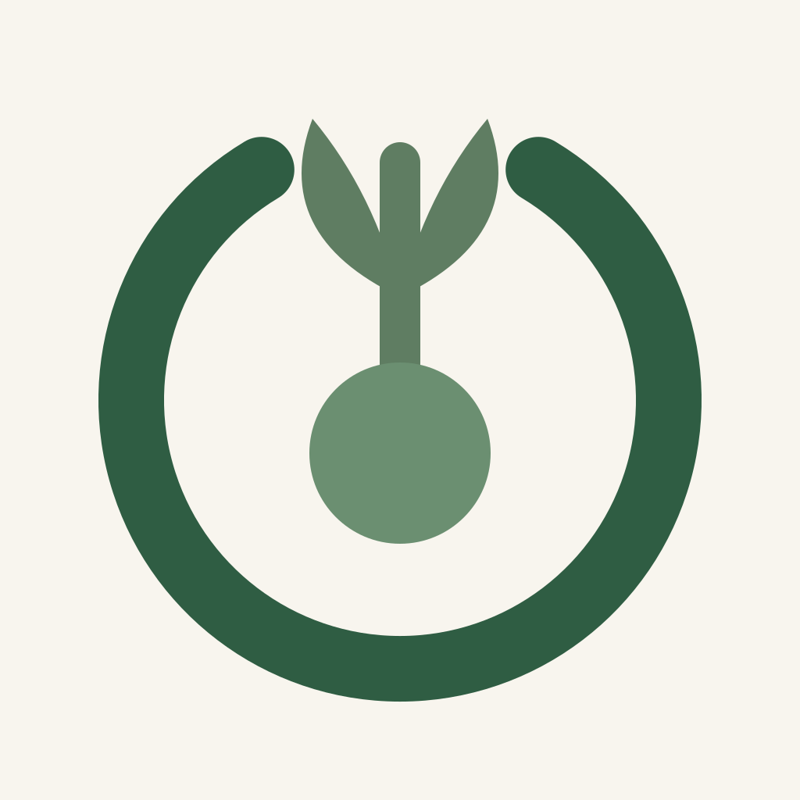

TapLog · identity prototypes
A local-first iPhone expense logger — capture in seconds from the Action Button, widget or Siri, with budgets that grow into a grove. Calm, private, botanical; deliberately not blue fintech. Identical type treatment throughout, so the symbol is the only variable.
A leaf rooted inside the ring.
App icon · one colour
Scale
Holds at 16 px — resolves to a ring and a solid centre, the same legibility shipped today.
A sprout grows out through the opening in the ring.

App icon · one colour


Scale
Weakest at 16 px — the sprout fills in and reads as a keyhole.
One entry cut into an otherwise closed record.
App icon · one colour
Scale
Legible at 16 px, but the notch is gone by 32 px, so the idea is lost when small.